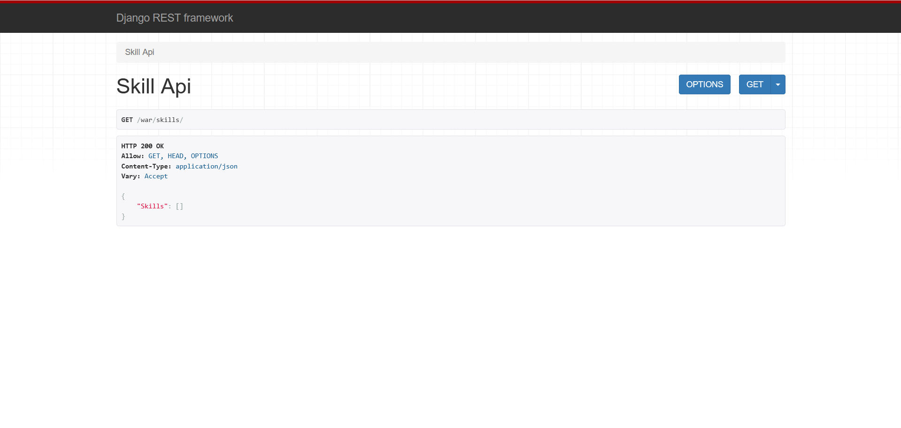
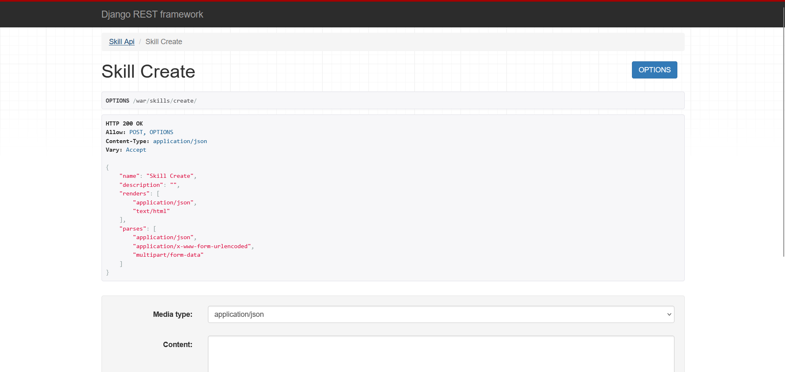
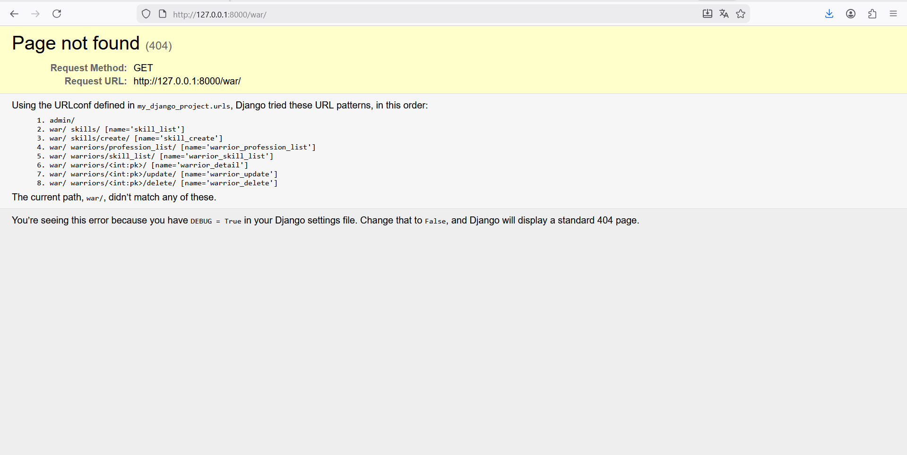

Отчет по Практическому занятию №3.2
Тема: Контроллеры и Сериализаторы в Django REST Framework (DRF)
В рамках работы была осуществлена интеграция Django REST Framework (DRF) в существующий проект, определены новые модели для API-сервиса (Warrior, Profession, Skill, SkillOfWarrior), и реализованы все требуемые эндпоинты с использованием как базовых APIView, так и Generic API Views.
1. Подготовка Проекта и Модели Данных
Интеграция DRF
Библиотека djangorestframework была установлена (pip install djangorestframework) и добавлена в INSTALLED_APPS в файле settings.py.
Определение Моделей
Модели, описывающие сущности воинов, их профессий и умений, были созданы в новом приложении warriors_app.
from django.db import models
class Profession(models.Model):
title = models.CharField(max_length=120, verbose_name='Название')
description = models.TextField(verbose_name='Описание')
def __str__(self):
return self.title
class Skill(models.Model):
title = models.CharField(max_length=120, verbose_name='Наименование')
def __str__(self):
return self.title
class Warrior(models.Model):
race_types = (
('s', 'student'),
('d', 'developer'),
('t', 'teamlead'),
)
race = models.CharField(max_length=1, choices=race_types, verbose_name='Расса')
name = models.CharField(max_length=120, verbose_name='Имя')
level = models.IntegerField(verbose_name='Уровень', default=0)
skill = models.ManyToManyField('Skill', verbose_name='Умения', through='SkillOfWarrior',
related_name='warrior_skils')
profession = models.ForeignKey('Profession', on_delete=models.CASCADE, verbose_name='Профессия',
blank=True, null=True)
def __str__(self):
return self.name
class SkillOfWarrior(models.Model):
skill = models.ForeignKey('Skill', verbose_name='Умение', on_delete=models.CASCADE)
warrior = models.ForeignKey('Warrior', verbose_name='Воин', on_delete=models.CASCADE)
level = models.IntegerField(verbose_name='Уровень освоения умения')
2. Практическое задание 1: Эндпоинты для Skill (APIView)
Реализованы эндпоинты для просмотра (GET) и создания (POST) объектов Skill с использованием базового класса APIView.
Сериализаторы (warriors_app/serializers.py)
from rest_framework import serializers
from .models import Skill
class SkillSerializer(serializers.ModelSerializer):
class Meta:
model = Skill
fields = '__all__'
class SkillCreateSerializer(serializers.ModelSerializer):
class Meta:
model = Skill
fields = ('title',)
Представления (warriors_app/views.py)
from rest_framework.views import APIView
from rest_framework.response import Response
from .models import Skill
from .serializers import SkillSerializer, SkillCreateSerializer
class SkillAPIView(APIView):
def get(self, request):
skills = Skill.objects.all()
serializer = SkillSerializer(skills, many=True)
return Response({"Skills": serializer.data})
class SkillCreateView(APIView):
def post(self, request):
skill_data = request.data.get("skill")
serializer = SkillCreateSerializer(data=skill_data)
if serializer.is_valid(raise_exception=True):
skill_saved = serializer.save()
return Response({"Success": f"Skill '{skill_saved.title}' created successfully."})
return Response(serializer.errors, status=400)
Маршруты (warriors_app/urls.py)
from django.urls import path
from .views import SkillAPIView, SkillCreateView
app_name = "warriors_app"
urlpatterns = [
path('skills/', SkillAPIView.as_view(), name='skill_list'),
path('skills/create/', SkillCreateView.as_view(), name='skill_create'),
]
Результат работы:


3. Практическое задание 2: Generic API Views
Реализованы эндпоинты для вывода, редактирования и удаления информации о воинах с использованием Generic API Views.
Дополнительные Сериализаторы (Вложенность)
Для выполнения требований по выводу полной информации о воинах (с профессиями и скиллами в одном запросе) использовалась вложенная сериализация (Nested Serialization).
# warriors_app/serializers.py (дополнение)
class ProfessionSerializer(serializers.ModelSerializer):
class Meta:
model = Profession
fields = ('title', 'description')
class SkillOfWarriorSerializer(serializers.ModelSerializer):
title = serializers.CharField(source='skill.title', read_only=True)
class Meta:
model = SkillOfWarrior
fields = ('title', 'level')
class WarriorProfessionSerializer(serializers.ModelSerializer):
profession = ProfessionSerializer()
class Meta:
model = Warrior
fields = '__all__'
class WarriorSkillSerializer(serializers.ModelSerializer):
skill = SkillOfWarriorSerializer(source='skillofwarrior_set', many=True)
class Meta:
model = Warrior
fields = '__all__'
class WarriorDetailSerializer(serializers.ModelSerializer):
profession = ProfessionSerializer()
skill = SkillOfWarriorSerializer(source='skillofwarrior_set', many=True)
race_display = serializers.CharField(source='get_race_display', read_only=True)
class Meta:
model = Warrior
fields = '__all__'
Представления (warriors_app/views.py)
Использовались специализированные классы, такие как ListAPIView, RetrieveAPIView, UpdateAPIView и DestroyAPIView, которые требуют только указания serializer_class и queryset.
from rest_framework import generics
from .serializers import (
WarriorProfessionSerializer,
WarriorSkillSerializer,
WarriorDetailSerializer,
)
class WarriorProfessionListAPIView(generics.ListAPIView):
serializer_class = WarriorProfessionSerializer
queryset = Warrior.objects.all()
class WarriorSkillListAPIView(generics.ListAPIView):
serializer_class = WarriorSkillSerializer
queryset = Warrior.objects.all()
class WarriorRetrieveAPIView(generics.RetrieveAPIView):
serializer_class = WarriorDetailSerializer
queryset = Warrior.objects.all()
lookup_field = 'pk'
class WarriorUpdateAPIView(generics.UpdateAPIView):
serializer_class = WarriorDetailSerializer
queryset = Warrior.objects.all()
lookup_field = 'pk'
class WarriorDestroyAPIView(generics.DestroyAPIView):
queryset = Warrior.objects.all()
lookup_field = 'pk'
Маршруты (warriors_app/urls.py)
# warriors_app/urls.py (дополнение)
urlpatterns = [
path('skills/', SkillAPIView.as_view(), name='skill_list'),
path('skills/create/', SkillCreateView.as_view(), name='skill_create'),
path('warriors/profession_list/', WarriorProfessionListAPIView.as_view(), name='warrior_profession_list'),
path('warriors/skill_list/', WarriorSkillListAPIView.as_view(), name='warrior_skill_list'),
path('warriors/<int:pk>/', WarriorRetrieveAPIView.as_view(), name='warrior_detail'),
path('warriors/<int:pk>/update/', WarriorUpdateAPIView.as_view(), name='warrior_update'),
path('warriors/<int:pk>/delete/', WarriorDestroyAPIView.as_view(), name='warrior_delete'),
]
Результат работы:

4. Выводы
В результате выполнения практического задания было получено представление об использовании ключевых компонентов Django REST Framework:
* Сериализация: Освоены базовые и вложенные сериализаторы (ModelSerializer, вложенность).
* Контроллеры (Views): Реализованы эндпоинты на основе APIView для создания и просмотра данных.
* Generic Views: Применено использование Generic API Views (ListAPIView, RetrieveAPIView, UpdateAPIView, DestroyAPIView) для быстрой реализации CRUD-операций, что значительно сокращает количество кода.